Desde plataformas como GitHub o GitLab
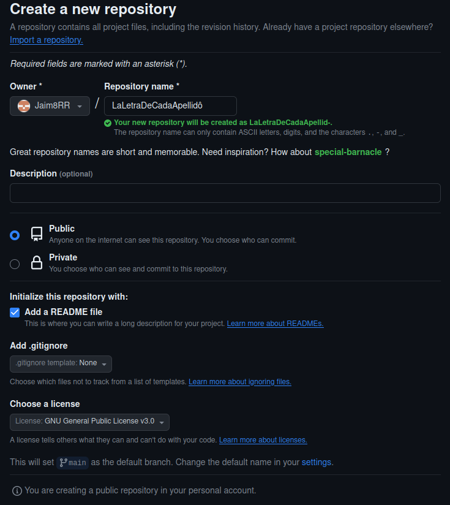
El README.md es un archivo de texto en formato Markdown.
Contiene información sobre el proyecto, instrucciones para su instalación y uso, ejemplos, y cualquier otra información relevante para los usuarios del proyecto.
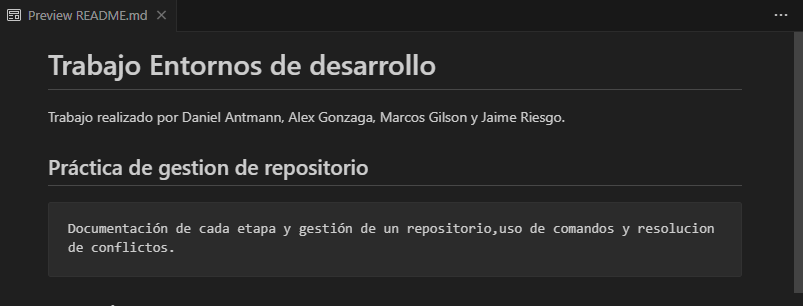
Contiene información sobre el proyecto, instrucciones para su instalación y uso, ejemplos, y cualquier otra información relevante para los usuarios del proyecto.
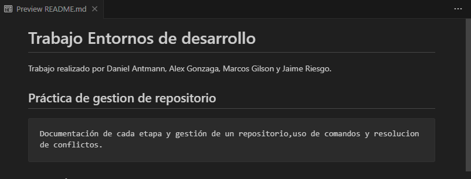
Markdown es un lenguaje de marcas para dar formato a textos. Es fácil de
leer y escribir. Usa la extension .md
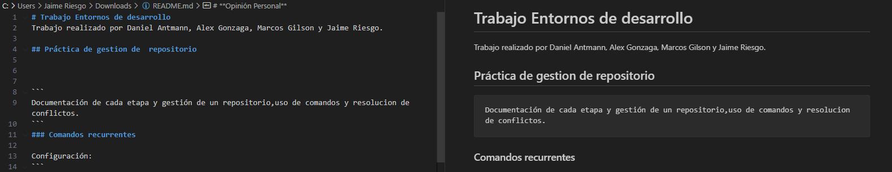
Son los términos y condiciones de uso, establecen la modificación y
distribución de un software.
Sirven para proteger los derechos del creador sobre su software y restringir o no su uso y que puedes hacer con el.
En nuestro caso ponemos GNU GPLv3 ya que damos libre acceso de uso.

Sirven para proteger los derechos del creador sobre su software y restringir o no su uso y que puedes hacer con el.
En nuestro caso ponemos GNU GPLv3 ya que damos libre acceso de uso.
El archivo .gitignore es utilizado para especificar archivos y carpetas
que Git debe ignorar al rastrear cambios en un proyecto.
Al principio del trabajo pensamos que no iba a ser necesario pero al usar visualStudio añadimos un gitignore en .vscode
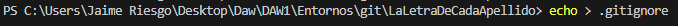
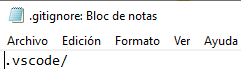
Al principio del trabajo pensamos que no iba a ser necesario pero al usar visualStudio añadimos un gitignore en .vscode
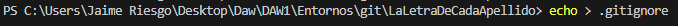
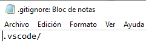
-
-
-
En nuestro caso optamos por hacer clone.
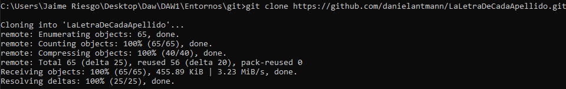
git clone <URL-del-repositorio-remoto>: Clona un
repositorio remoto en tu máquina local.-
git remote add <nombre-remoto>: Asocia un
repositorio remoto con tu repositorio local.-
git pull <nombre-remoto> <rama-remota>: Obtiene
cambios desde el repositorio remoto y los fusiona con tu rama local.En nuestro caso optamos por hacer clone.
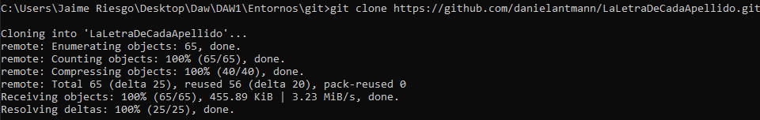
git commit -m "Mensaje del commit"
Previamente hay que hacer un git add al contenido que quieras hacer commit
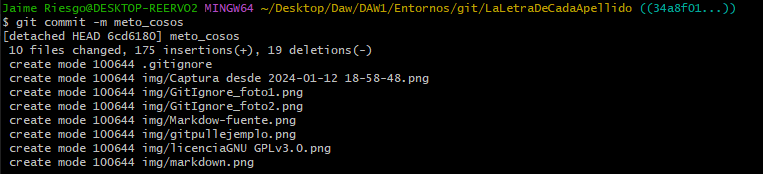
Previamente hay que hacer un git add al contenido que quieras hacer commit
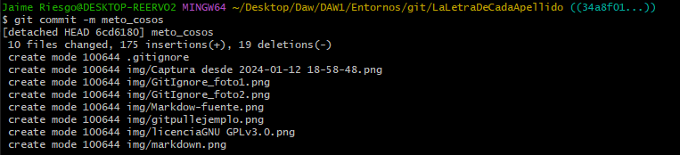
Cada commit debería representar un cambio o una funcionalidad
específica.
Commits frecuentes y bien estructurados facilitan la revisión de cambios y la colaboración.
En nuestro caso cada vez que alguien terminaba un parte medianamente importante hacia un commit
especificando su motivo.
Commits frecuentes y bien estructurados facilitan la revisión de cambios y la colaboración.
En nuestro caso cada vez que alguien terminaba un parte medianamente importante hacia un commit
especificando su motivo.
Hacer un repositorio remoto ,y una vez el creador de permisos a cada persona que vaya a participar, se establezca un flujo de trabajo en el cual o bien en varias ramas diferentes o en una misma con trabajos separados
Nota: no deberíamos trabajar sobre Main(la rama Principal).
Nota: no deberíamos trabajar sobre Main(la rama Principal).